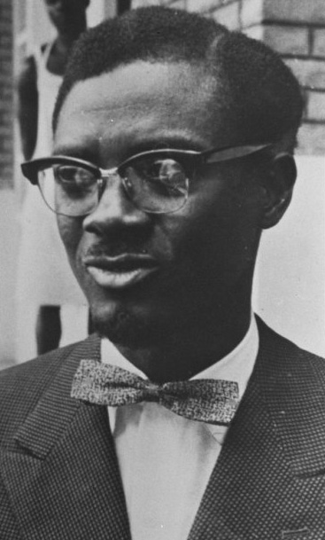
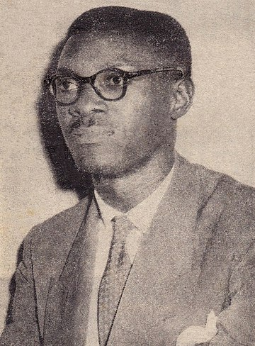

Patrice Lumumba
From Wikipedia, the free encyclopedia
"Lumumba" redirects here. For other uses, see Lumumba (disambiguation) .
Patrice Émery Lumumba[e] (/lʊˈmʊmbə/ ⓘ;[3] 2 July 1925 – 17 January 1961), born Isaïe Tasumbu Tawosa,[4] was a Congolese politician and independence leader who served as the first prime minister of the Democratic Republic of the Congo (then known as the Republic of the Congo) from June until September 1960, following the May 1960 election. He was the leader of the Congolese National Movement (MNC) from 1958 until his assassination in 1961. Ideologically an African nationalist and pan-Africanist, he played a significant role in the transformation of the Congo from a colony of Belgium into an independent republic. Shortly after Congolese independence in June 1960, a mutiny broke out in the army, marking the beginning of the Congo Crisis. After a coup, Lumumba attempted to escape to Stanleyville to join his supporters who had established a new anti-Mobutu state called the Free Republic of the Congo. Lumumba was captured en route by state authorities under Joseph-Désiré Mobutu, sent to the State of Katanga and, with the help of Belgian partisans, tortured and executed by the separatist Katangan authorities of Moïse Tshombe. He was seen as a martyr for the pan-African movement. In 2002, Belgium formally apologised for its role in the execution.
Life and Early career
Photograph of Lumumba, c. 1950s Patrice Lumumba was born on 2 July 1925 as Isaïe Tasumbu Tawosa to Julienne Wamato Lomendja and her husband, François Tolenga Otetshima, a farmer, in Onalua, in the Katakokombe region of the Kasai province of the Belgian Congo.[5][6] He was a member of the Tetela ethnic group and was born with the name Élias Okit'Asombo.[7][8][9] His original surname means "heir of the cursed" and is derived from the Tetela words okitá/okitɔ́ ('heir', 'successor')[10] and asombó ('cursed or bewitched people who will die quickly'). [11] He had three brothers (Charles Lokolonga, Émile Kalema, and Louis Onema Pene Lumumba) and one half-brother (Jean Tolenga).[5] Raised in a Catholic family, he was educated at a Protestant primary school, a Catholic missionary school, and finally the government post office training school, where he passed the one-year course with distinction. He was known for being a vocal, precocious young man, regularly pointing out the errors of his teachers in front of his peers.[12] This outspoken nature would come to define his life and career. Lumumba spoke Tetela, French, Lingala, Swahili, and Tshiluba.[5]Outside of his regular studies, Lumumba took an interest in the Enlightenment ideals of Jean-Jacques Rousseau and Voltaire. He was also fond of Molière and Victor Hugo. He wrote poetry, and many of his works had anti-imperialist themes.[13] He worked as a travelling beer salesman in Léopoldville and as a postal clerk in Stanleyville for eleven years.[14] Lumumba was married three times. He married Henriette Maletaua a year after arriving in Stanleyville; they divorced in 1947. In the same year, he married Hortense Sombosia, but this relationship also fell apart. He began an affair with Pauline Kie. While he had no children with his first two wives, his relationship with Kie resulted in a son, François Lumumba. Though he remained close with Kie until his death, Lumumba ultimately ended their affair to marry Pauline Opangu in 1951.[1]
Leader of MNC
After his release, Lumumba helped found the Mouvement National Congolais (MNC) party in 1958 and quickly became the organisation's leader.[13] The MNC, unlike other Congolese parties developing at the time, did not draw on a particular ethnic base.[18] It promoted a platform that included independence, gradual Africanisation of the government, state-led economic development, and neutrality in foreign affairs. Lumumba had a large popular following[18] and as a result, he had more political autonomy than contemporaries who were more dependent on Belgian connections.[19]
Independence and election as prime minister
The conference culminated on 27 January 1960 with a declaration of Congolese independence. It set 30 June 1960 as the independence date with national elections to be held from 11 to 25 May 1960. The MNC won a plurality in the election. Six weeks before the date of independence, Walter Ganshof van der Meersch was appointed as the Belgian Minister of African Affairs. He lived in Léopoldville, in effect becoming Belgium's de facto resident minister in the Congo, administering it jointly with Governor-general Hendrik Cornelis.[21] He was charged with advising King Baudouin on the selection of a formateur. [22] On 8 June 1960, Ganshof flew to Brussels to meet with Baudouin. He made three suggestions for formateur: Lumumba, as the winner of the elections; Joseph Kasa-Vubu, the only figure with a reliable national reputation who was associated with the coalescing opposition; or some to-be- determined third individual who could unite the competing blocs.[23]
Political ideology
Lumumba did not espouse a comprehensive political or economic platform.[199] According to Patricia Goff, Lumumba was the first Congolese to articulate a narrative of the Congo that contradicted traditional Belgian views of colonisation, and he highlighted the suffering of the indigenous population under European rule. Goff writes that Lumumba was alone among his contemporaries in encompassing all Congolese people in his narrative (the others confined their discussions to their respective ethnicities or regions),[200] and he offered a basis for national identity that was predicated upon having survived colonial victimisation, as well as the people's innate dignity, humanity, strength, and unity.[201]
Community work
Lumumba did not espouse a comprehensive political or economic platform.[199] According to Patricia Goff, Lumumba was the first Congolese to articulate a narrative of the Congo that contradicted traditional Belgian views of colonisation, and he highlighted the suffering of the indigenous population under European rule. Goff writes that Lumumba was alone among his contemporaries in encompassing all Congolese people in his narrative (the others confined their discussions to their respective ethnicities or regions),[200] and he offered a basis for national identity that was predicated upon having survived colonial victimisation, as well as the people's innate dignity, humanity, strength, and unity.[201]
Political Work
Lumumba did not espouse a comprehensive political or economic platform.[199] According to Patricia Goff, Lumumba was the first Congolese to articulate a narrative of the Congo that contradicted traditional Belgian views of colonisation, and he highlighted the suffering of the indigenous population under European rule. Goff writes that Lumumba was alone among his contemporaries in encompassing all Congolese people in his narrative (the others confined their discussions to their respective ethnicities or regions),[200] and he offered a basis for national identity that was predicated upon having survived colonial victimisation, as well as the people's innate dignity, humanity, strength, and unity.[201]